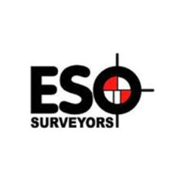
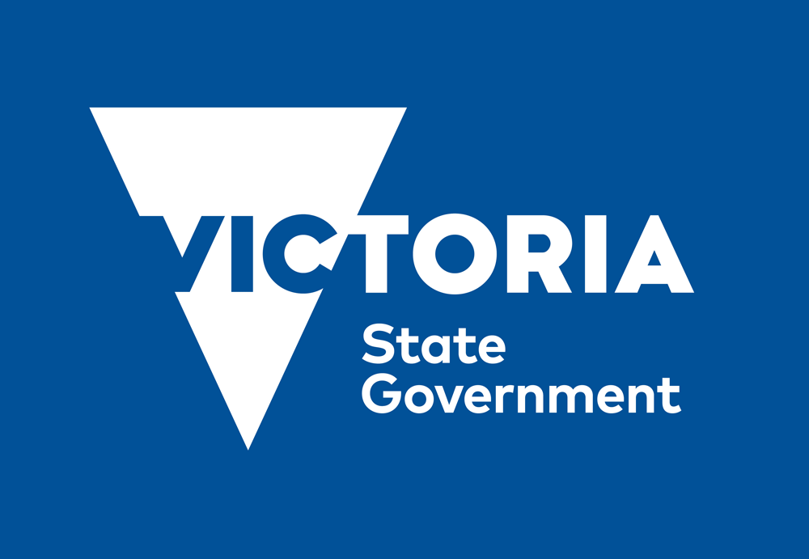

Jordan Lees Geoportfolio
Surveyor
I am Jordan Lees, a fourth-year student pursuing a Bachelor of Applied Science in Surveying at RMIT, with an expected graduation in November 2024. I have a passion for surveying and geospatial technology, especially in digital and spatial data applications such as using drones and scanning technology.
I have extensive experience working as a Survey Assistant at ESO Surveyors and Veris, as well as a Geodetic Survey Technical Officer at Survey-General Victoria, with a focus on engineering, cadastral, and geodetic surveying.

Below are some of the projects I've worked on during my academic career:
Capstone Project: AHD Height Discrepancies
A detailed research project analyzing Australian Height Datum (AHD) discrepancies, including detection, underlying causes, and prediction models. The project included surveys using static and RTK kits and creating predictive overlays using ArcGIS Pro.
Cartography
Cartography Subjects at University focused on creating maps using various programs. Below is a map This map shows the percentage of people in Victoria who commute to work using public transport, highlighting areas with higher usage of trains, buses, and trams. It also marks the locations of train stations to explore potential correlations between station proximity and public transport use.

Survey Assistant - ESO Surveyors
Assisted in a variety of survey tasks, including engineering, cadastral, and setout surveys. Worked on high-profile projects such as the level crossing removal project.

Geodetic Survey Technical Officer - Survey-General Victoria
Conducted an 2 month internship with the Geodesy Department at Surveyor-General Victoria. Assisted with GPSnet, SMES, and high-precision surveying services. Supported airborne gravity surveys, ensuring adherence to strict QA/QC standards.
